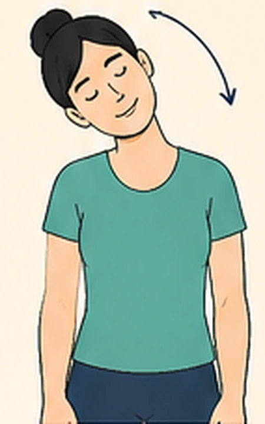
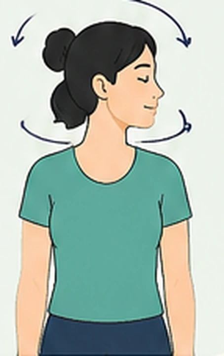
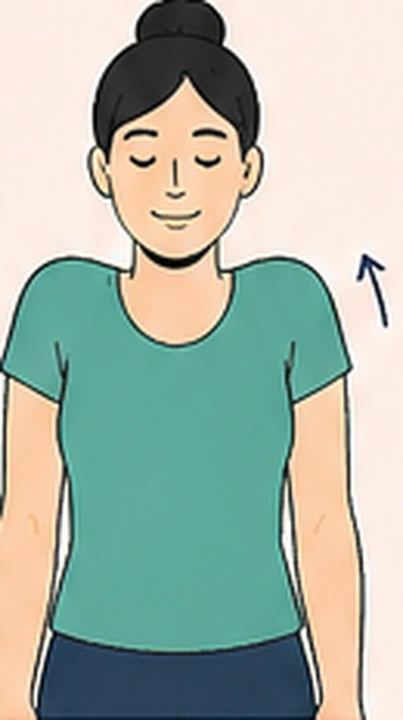
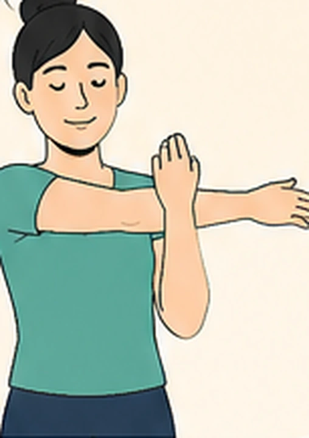
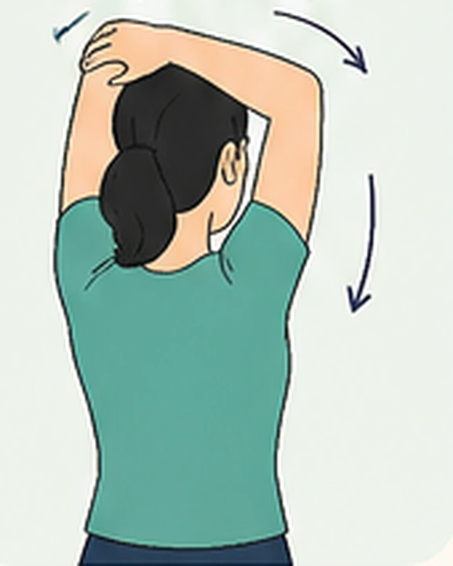
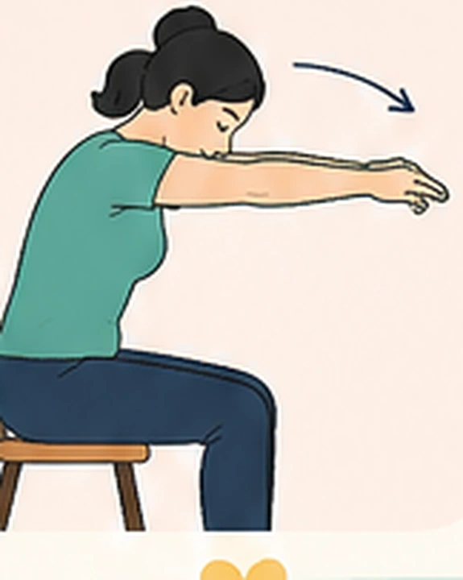
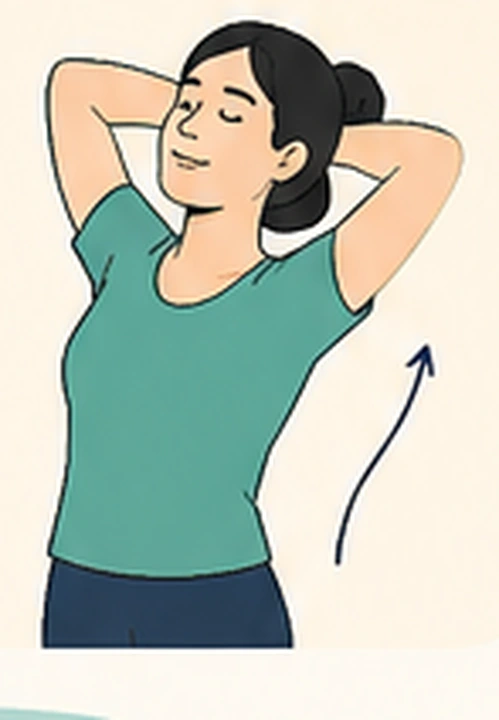
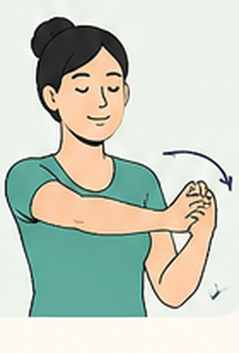
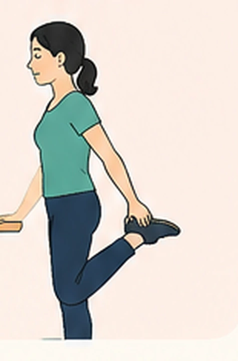
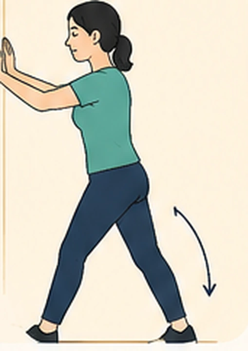

15 minutos para cuidar de você
Faça cada alongamento por 15 a 30 segundos, respirando fundo e devagar.
Faça cada movimento devagar, sem forçar. Pare se sentir dor.

Pescoço
Incline a cabeça lentamente para o lado direito e depois para o lado esquerdo.

Pescoço
Vire a cabeça suavemente para a direita e depois para a esquerda.

Ombros
Encolha os ombros em direção às orelhas, segure por alguns segundos e solte.

Ombros e braços
Leve um braço à frente do corpo e puxe-o levemente em direção ao peito. Troque de braço.

Tríceps
Leve um braço para cima, dobre o cotovelo e puxe-o levemente para trás. Troque de braço.

Coluna
Entrelace os dedos, vire as palmas para fora e estique os braços à frente, arredondando as costas.

Coluna
Entrelace as mãos atrás da cabeça, abra os cotovelos e estique levemente a coluna para trás.

Punhos e mãos
Estenda um braço à frente, com a palma para cima, e puxe suavemente os dedos para trás. Troque de mão.

Pernas
Segure em uma superfície firme, dobre uma perna para trás e leve o pé em direção ao glúteo. Troque de perna.

Panturrilha
Apoie as mãos na parede, coloque uma perna atrás da outra e empurre o calcanhar de trás contra o chão.